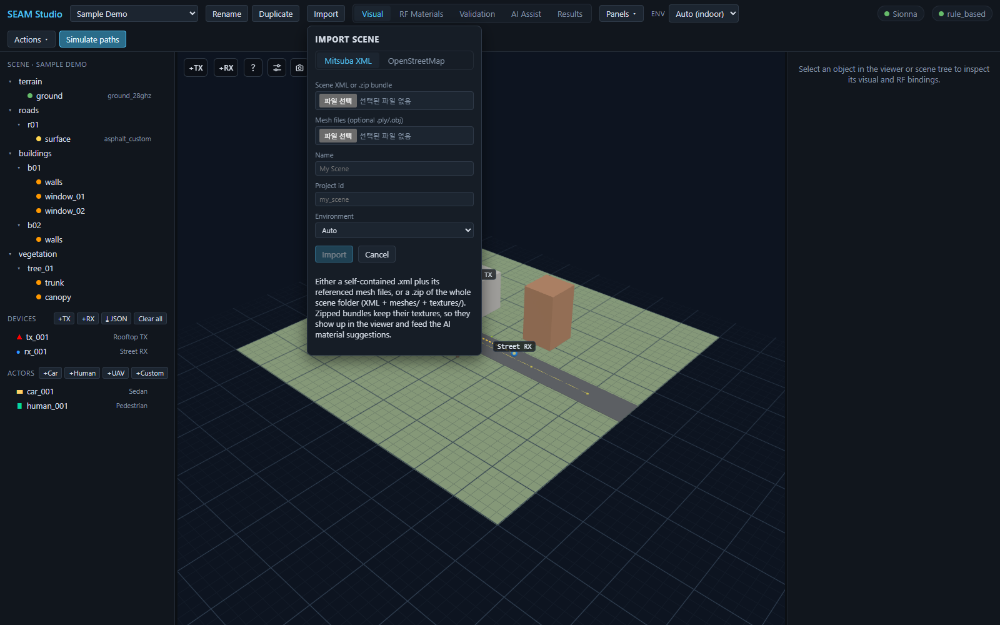
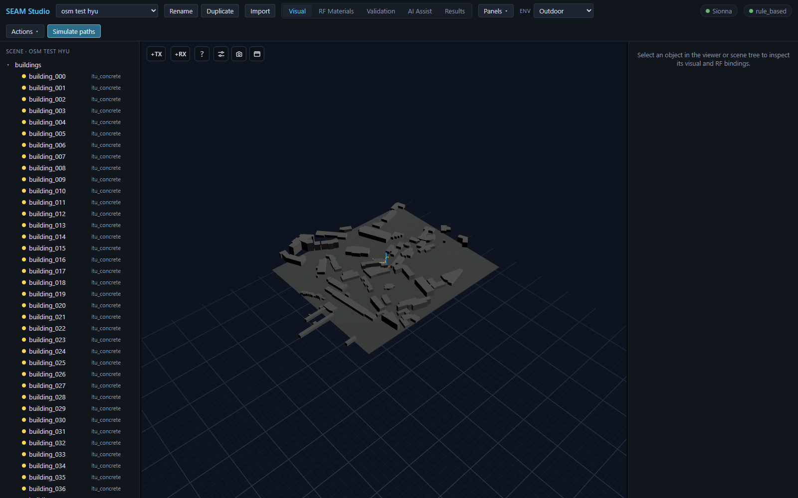

Importing Scenes: Mitsuba XML, OpenStreetMap, and Device JSON
SEAM Studio gets geometry into a project three ways: a Mitsuba/Sionna XML scene (a single .xml plus mesh files, or a .zip of the whole scene folder), an OpenStreetMap area (real-world buildings extruded to 3D), and — for radio devices and UE routes rather than geometry — JSON point import. This guide walks through all three. Everything here works with the Mock backend, so you don't need Sionna RT installed to follow along.
| You have | Use | You get |
|---|---|---|
A Mitsuba/Sionna scene (.xml + meshes, or a .zip) | Import → Mitsuba XML | the scene as a new project; textures kept if zipped |
| A real-world address or area | Import → OpenStreetMap | extruded buildings with default RF materials |
| TX/RX positions or a UE route in JSON | ⤓ JSON (Devices) / ⤓ Import JSON (trajectory) | devices/waypoints added to the open project |
1. The Import button and the Import scene dialog
Press Import on the left of the top toolbar (next to the project select). A small Import scene dialog opens with two source tabs: Mitsuba XML and OpenStreetMap. If you have no projects at all yet, the empty state shows an Import a scene button that opens the same dialog.

Whichever tab you use, the bottom three fields are the same:
- Name — display name shown in the project select (e.g.
My Scene). - Project id — folder-safe id, auto-derived from the name until you edit it. Lowercase letters, digits,
-and_only; a duplicate id is rejected inline. - Environment —
Auto,Indoor, orOutdoor(see section 4).
The primary Import button starts the import; Cancel closes the dialog.
2. Mitsuba XML tab
The Mitsuba XML tab imports a Mitsuba/Sionna RT scene as a new project. You have two options in the Scene XML or .zip bundle file picker:
- A single
.xmlfile. If the XML references external meshes, add them through the second picker, Mesh files (optional .ply/.obj) (multiple selection;.ply,.obj,.stl). - A
.zipof the whole scene folder — the XML plus itsmeshes/andtextures/directories at their original relative paths. When you pick a zip, the mesh picker disappears: the bundle already carries everything.
Prefer the zip when the scene has textures. As the dialog's own hint puts it: zipped bundles keep their textures, so they show up in the viewer and feed the AI material suggestions — a vision-capable provider in the AI Assist tab can look at the actual surface photos when proposing RF materials, instead of guessing from mesh names alone.
Steps:
- Press
Importin the toolbar and stay on theMitsuba XMLtab. - Pick your
.xmlor.zipin Scene XML or .zip bundle. The Name field auto-fills from the file name. - (Single-XML only) add companion meshes under Mesh files (optional .ply/.obj).
- Check Name, Project id, and Environment, then press Import.
- The import runs as a background job — a progress row (
Importing…with the current phase and step count) tracks it, and you can keep working. When it finishes, the new project opens automatically; non-fatal warnings (skipped meshes, remapped materials) surface as a notification.
3. OpenStreetMap tab
The OpenStreetMap tab builds an outdoor scene from real-world building footprints. It needs internet access (it queries the OSM Overpass API).
- Switch the dialog to
OpenStreetMap. The dialog widens to show a map with a search box (Search a place…) — type a place name or paste any coordinate from Google Maps. - Press
▭ Select area on map, then drag a rectangle on the map (the button switches toDrag a rectangle on the map…while armed). The Latitude, Longitude, Width (m, E–W), and Height (m, N–S) fields fill in automatically; you can also type them directly. Area sides are clamped to 50–3000 m. - Set Default bldg height (m) — used for buildings whose OSM data has no height or level tags (minimum 3 m).
- Fill in Name / Project id, then press Import (it reads
Fetching OSM…while running).
The importer fetches every building footprint inside the rectangle, extrudes each one using its OSM height/levels tags (falling back to your default height), and drops a ground plane. Every prim arrives with an RF material already bound: buildings get itu_concrete and the ground gets ground_28ghz (a 28 GHz-safe ground). The scene also stores the geodetic anchor of your rectangle's center, which later lets you import devices and waypoints by latitude/longitude (see section 5).

itu_concrete, ENV Outdoor.itu_concrete everywhere is a deliberate starting point, not the final answer. Refine it afterwards in the RF Materials tab (per-object or bulk assignment) or let the AI Assist tab propose better candidates with Suggest RF materials — see RF materials and the AI assistant.
4. Environment modes (Auto / Indoor / Outdoor)
The Environment field in the import dialog — and the Env select in the toolbar afterwards — tells SEAM Studio what scale of scene it is dealing with:
- Auto infers indoor/outdoor from the scene's spatial extent (a largest span under 25 m reads as indoor); the toolbar shows what it resolved to, e.g.
Auto (outdoor). - Indoor applies compact solver defaults: path depth 5 with refraction on, and a fine 0.25 m radio-map grid at 1.2 m height.
- Outdoor applies wide-area defaults: path depth 3, refraction off, and a 2 m radio-map grid at 1.5 m height.
The environment also drives viewer sizing — device markers get a larger minimum size outdoors so they stay visible on a campus-scale scene, and path interaction dots shrink indoors — plus a wider default camera framing for outdoor scenes. Changing Env later applies the matching solver defaults to the Paths/Radio map sections for the session (your hand-tuned knobs are only overwritten when you actually switch environments, and nothing is saved as the project default unless you save it explicitly).
5. Importing devices and trajectories from JSON
Scene import brings geometry; radio devices and UE routes have their own JSON import that works on any open project:
- Devices — in the scene tree's Devices section header, next to
+TX/+RX, press⤓ JSONand pick a JSON file. Devices are upserted into the scene (existing ids are updated in place), and a notification reports how many were added/updated plus any warnings. - Trajectory waypoints — in the trajectory routes editor of the Results mode,
⤓ Import JSONloads a UE route from a file, as an alternative to drawing it in the viewport.
Both accept the same point schema: cartesian points (x/y/z, local ENU meters, Z-up) or geographic points (lat/lon with alt_m or agl_m), auto-detected per entry and freely mixed in one file. Geographic points require the scene to have a geodetic anchor — OSM imports set one automatically. The full format, including agl_m height-above-ground semantics, orientation fields, and ready-made templates, is in Point / device / trajectory import.
6. What a drone-scan textured bundle looks like
The bundled FTC Outdoor example shows where a zipped, textured import can end up: a photogrammetry (drone-scan) building whose photo textures render directly in the viewer, surrounded by OSM-imported context buildings and terrain, with a UAV actor following a yellow flight path above the site.

Because the textures survive the import, this kind of scene gets the full pipeline: the AI Assist tab can reason about the visible surfaces (concrete/glass/metal splits), and everything downstream — paths, radio maps, trajectories — runs on the same geometry. Open the FTC Outdoor project from the toolbar's project select to explore one without importing anything.
Troubleshooting
- A duplicate Project id is rejected inline (
a project "…" already exists) — pick another id before the Import button enables. - OpenStreetMap import fails or hangs — the Overpass API needs internet and can time out on very large rectangles; the error appears inside the dialog. Retry, or shrink the selected area.
- Closing the dialog mid-import (XML tab) stops the progress display, but the job itself keeps running server-side — the project appears in the project select once it finishes.
Related docs
- Point / device / trajectory import — the JSON format for section 5
- RF materials — refining the default
itu_concreteassignments - AI assistant — texture-aware material suggestions
- Scene format — what an imported project looks like on disk
- 15-minute tutorial — the full first-session loop